“matrix”（矩阵）和“vector”（向量）是活跃在影视剧中的两个炫酷词汇（其中有部分影片很酷），而它们均是数学专用词汇。一个矩阵其实就是由一些数排列成的阵列，从画图到运转全球搜索引擎都用到了矩阵。
矩阵和向量这两个词有许多种含义。向量就好像一个传播疾病的动物，例如蚊子就是疟疾的向量（有方向）。矩阵可以是某个复杂材料的内部结构，比如水晶体。但是，在数学上，它们都是指按某种方式排列的一组数字。
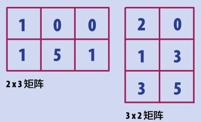
一个矩阵有确定的行数和列数。
孕育子阵
“matrix”（矩阵）一词的复数形式是“matrices”，这个单词的含义是“摇篮”或者“子宫”。它来源于拉丁文“mater”一词，意为“母亲”。数学上取矩阵这个概念，是因为它能“孕育”更小的子矩阵，即从矩阵中划出一个更小的阵列，构成一个新的、含有稍少些数字的矩阵。
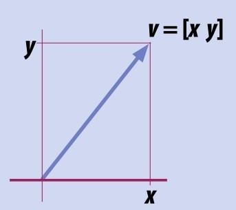
这个向量是由两个数构成的矩阵。这两个元素共同给出一个方向，而向量的长度表明其大小（见第111页）。
系数矩阵
矩阵这个名词是19世纪50年代英国数学家詹姆斯·约瑟夫·西尔维斯特给出的，虽然其具体形式在更久远之前就已经存在了。关于矩阵最早的文献可见于大约中国古代的数学巨著《九章算术》。在1545年，虚数（见第86页：复数）的发明者吉罗拉莫·卡尔达诺把这个概念传入欧洲，以帮助求解方程组，即几个未知变元由两个或更多等式关联，构成联立方程组。他把方程组的各个系数抽取出来保持位置构成一个阵列——这就构成了一个矩阵！
矩阵运算
矩阵间可以像数一样做加法，运算的方法如下所示。但是，需要注意的是，只能对行数和列数都相同的矩阵进行加法或减法运算。对于矩阵间的乘法，左乘矩阵的列数必须等于右乘矩阵的行数，才能进行运算。
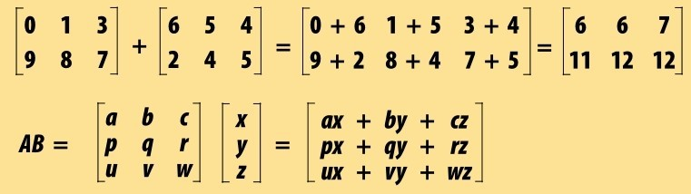
联立方程组
下面是一个联立方程组。
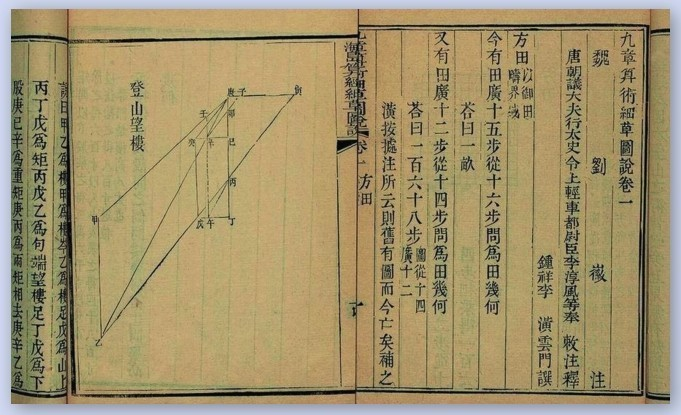
《九章算术》中的一页。此页的运算可以看作对矩阵运算的最早史料记载。
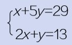
其中，x和y为未知变量。我们要做的就是求出这两个变量的值。其他数都是系数。上面这个方程组的解容易得到，分别是x=4和y=5。卡尔达诺应该知道如何求解这类简单的一元一次方程组，但是他更关注于多变元多方程构成的方程组的求解。
速率和速度
速度和速率常常被人们混淆。下图行驶的车辆可能有相同的速率（比如30千米/小时），但是它们的速度是不同的。速率是一个标量，只有大小，没有方向性，而速度是一个向量，是有方向性的（见第111页）。因此，在下图的高速公路上，直道上行驶的车辆和弯道上行驶的车辆有不同的方向，进而有不同的速度。
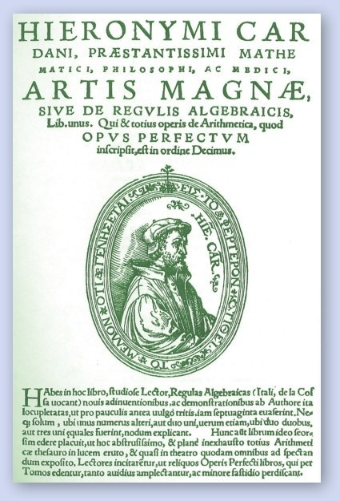
吉罗拉莫·卡尔达诺在《伟大的艺术》一书中为现代数学引入了矩阵的概念。
较简单的矩阵
卡尔达诺把方程组简化为一个矩阵方程。如本页前边的例子，可以写作
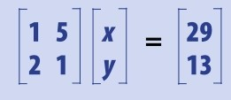
在原方程组的第一个等式中，变量x前面没有系数，因此我们认为它的系数为1。由此得到上面的系数矩阵，进而得到上面的矩阵方程，得以把一些系数和变量统一在一个方程中处理。这个矩阵方程大致的意思是：相应系数乘以x和y分别等于29和13。卡尔达诺等人找到了用矩阵求解方程组的方法，而且这种矩阵方程求解变元的方式适用于任意多个系数和变量的情形，并能求解比上例更为复杂的方程。
向量的意义
1×2矩阵——1行2列——被称为二维行向量。（列数可以增加为3列或更多。）“vector”（向量）一词意为“搬运”，简单地说，向量其实用于描述物体在空间中的运动轨迹，当然，向量也可以运用到几何学中，以及帮助理解复数。到19世纪，数学家开始借助矩阵形式表达向量，并利用卡尔达诺发明的矩阵方程解法去求解方程组。
变换
一个矩阵其实就是数的一种排列形式。矩阵的引入起源于求解复杂方程组的探索，但是，自发明之后，矩阵被广泛应用于方方面面。比如，一个矩阵可以表示一个图形的所有顶点；还可以构造一个矩阵，保持图形的形状，但是改变图形的位置或者方向。
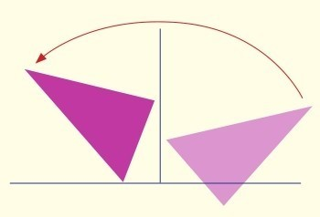
旋转
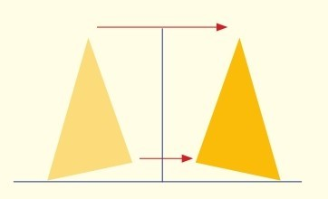
反射
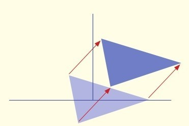
平移
大小与方向
在讨论向量之前，我们需要给出标量的概念。一个标量是一个值，没有方向，只有大小或量级，如一座公寓楼的楼高或一辆行驶中的汽车的车速——这些我们都可以用数值来给出。而向量是矢量，除有大小之外，还有方向性。比如一个建筑具有地表以上的高度和地表以下的深度，而汽车的运动更是沿着某个方向进行的。一个向量的两个元素可以表示出方向。向量的意义不光是能描述运动，更是给出了矢量分析的一种方式。向量中的第一个元素表明一个物体往左或右移动的距离，而第二个元素表明它往上或下移动的距离。比如，向量（3，4）表明一个向右3个单位、向上4个单位的运动。向左或向下运动可以用负数表达。设想这两个元素若分别表示一个直角三角形两条直角边的长度，用勾股定理，我们可以计算出它的弦长恰为5（见第36页）。这个数值正是这个向量的大小，即模长。
像素化
一幅印刷的图片或荧幕上的演出画面都是由无数的点或像素组成的。每一个像素都有一种颜色——可能只是简单的黑或白，或者成千上万种颜色中的某一种。一幅图片可以写成矩阵形式，把每行每列的像素用数字表达，每个数字代表一种具体的颜色。这样，图片就可以根据数字的色彩含义涂画出来。
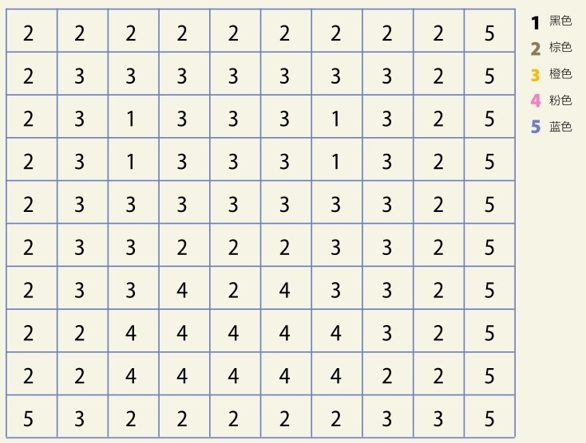
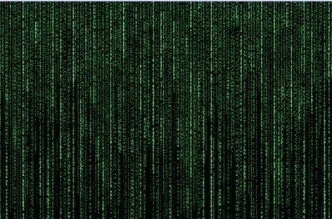
电影《黑客帝国》虚构了一个计算机中的世界。在现实生活中，矩阵被广泛应用于计算机的方方面面。
现实与虚幻的世界
向量可以用于描述一个质点上的所有力的作用。通过拆分每个力作用的大小和方向，这些力的作用的向量可以进行叠加，合成一个向量，以体现这个质点的实际运动轨迹。现实世界的向量一般用3个元素来表现三维方向，按照这个思路，数学家用向量去探索四维、五维甚至更高维的虚拟空间，其中最为成功的范例之一是谷歌搜索引擎。这个引擎为每一个网页设置一个对应的几十个数组成的矩阵。根据网页内容，矩阵中的每一个数值把网页“拉向”某一个方向。每一个搜索需求也对应一个矩阵，且当分析处理这两个矩阵后，可以得到一个数值来表明获得的页面与之前的搜索需求契合的程度。
参见：
▶勾股定理和勾股数，第36页
▶取模运算，第142页
原理
让我们逐步计算以了解矩阵的乘法运算规则：左乘矩阵的列数必须与右乘矩阵的行数一致。前者每一行的所有元素依次与后者每一列的所有元素做乘法，得到的乘积相加，即为乘积矩阵中该行该列对应的数。
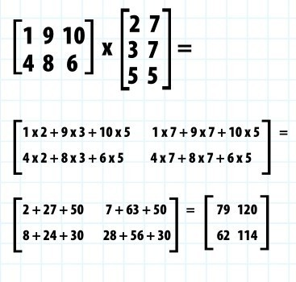